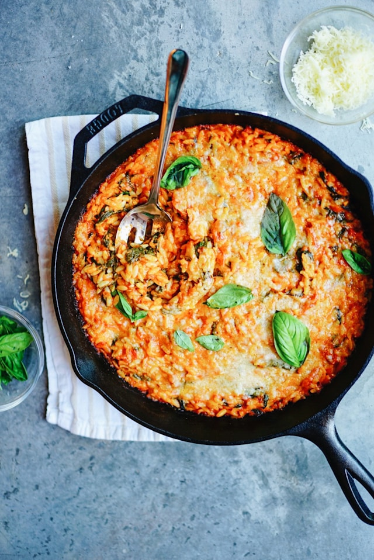

Marry Me Chicken Orzo
Home

Description
A recipe that will have you hearing wedding bells! Exploding with flavor, this recipe combines a tender, flavorful chicken and a hearty orzo pasta in a creamy, sun-dried tomato sauce.
A cozy, any night of the week dinner that comes together using just one pan!
Ingredients
- 1.5 pounds of boneless, skinless chicken breasts, cut into cubes
- 2 tablespoons of olive oil
- 4-5 cloves of garlic
- 3/4 cup of sun-dried tomatoes
- 2 teaspoons of italian seasoning
- 2 teaspoons of paprika
- 1/2 teaspoon of kosher salt
- 1 teaspoon of black pepper
- 1 cup of orzo
- 2 and 3/4 cups of chicken broth
- 3/4 cup of heavy cream
- 2 large handfuls of fresh spinach
- 3/4 cup of freshly grated parmesan cheese
Instructions
- Pat the chicken breasts dry with a paper towel and slice them into cubes. In a bowl, add your cubed chicken, one tablespoon of oil, salt, black pepper, paprika, and italian seasoning and mix until thoroughly combined. Set aside while you prepare the pan.
- On medium heat, add your remaining tablespoon of oil to the pan and heat for a few minutes before adding the seasoned chicken into the pan.
- Cook chicken for 2-3 minutes, until the edges start to brown. Now add your garlic and sun-dried tomatoes and cook for 3-4 more minutes, until the garlic is fragrant.
- Stir in orzo and chicken broth.
- Cover with a lid, let chicken and orzo cook on medium heat for 12 minutes, stirring occasionally to prevent orzo from sticking to the pan.
- Once the orzo is cooked through, add in the heavy cream and spinach and stir until the spinach is cooked down. If your dish is too creamy for your liking, you can add a little extra chicken broth and stir until it is at the consistency you prefer.
- Add in your freshly grated parmesan cheese and stir to combine.
- Once combined, remove it from the heat, serve immediately, and enjoy!